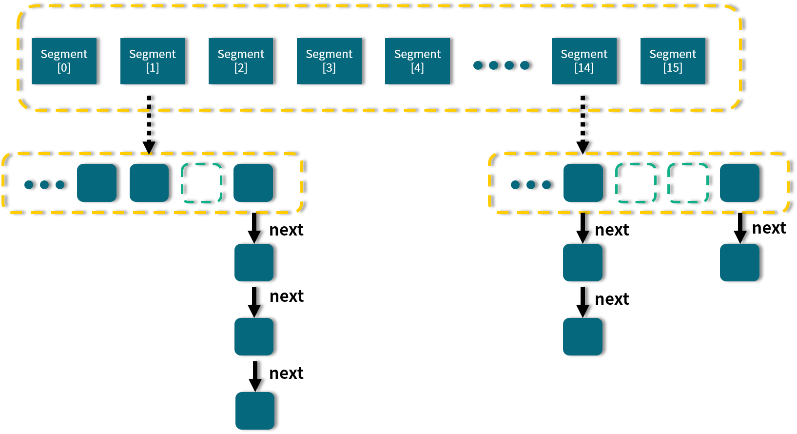

- 00 由点及面，搭建你的 Java 并发知识网.md.html
- 01 为何说只有 1 种实现线程的方法？.md.html
- 02 如何正确停止线程？为什么 volatile 标记位的停止方法是错误的？.md.html
- 03 线程是如何在 6 种状态之间转换的？.md.html
- 04 waitnotifynotifyAll 方法的使用注意事项？.md.html
- 05 有哪几种实现生产者消费者模式的方法？.md.html
- 06 一共有哪 3 类线程安全问题？.md.html
- 07 哪些场景需要额外注意线程安全问题？.md.html
- 08 为什么多线程会带来性能问题？.md.html
- 09 使用线程池比手动创建线程好在哪里？.md.html
- 10 线程池的各个参数的含义？.md.html
- 11 线程池有哪 4 种拒绝策略？.md.html
- 12 有哪 6 种常见的线程池？什么是 Java8 的 ForkJoinPool？.md.html
- 13 线程池常用的阻塞队列有哪些？.md.html
- 14 为什么不应该自动创建线程池？.md.html
- 15 合适的线程数量是多少？CPU 核心数和线程数的关系？.md.html
- 16 如何根据实际需要，定制自己的线程池？.md.html
- 17 如何正确关闭线程池？shutdown 和 shutdownNow 的区别？.md.html
- 18 线程池实现“线程复用”的原理？.md.html
- 19 你知道哪几种锁？分别有什么特点？.md.html
- 20 悲观锁和乐观锁的本质是什么？.md.html
- 21 如何看到 synchronized 背后的“monitor 锁”？.md.html
- 22 synchronized 和 Lock 孰优孰劣，如何选择？.md.html
- 23 Lock 有哪几个常用方法？分别有什么用？.md.html
- 24 讲一讲公平锁和非公平锁，为什么要“非公平”？.md.html
- 25 读写锁 ReadWriteLock 获取锁有哪些规则？.md.html
- 26 读锁应该插队吗？什么是读写锁的升降级？.md.html
- 27 什么是自旋锁？自旋的好处和后果是什么呢？.md.html
- 28 JVM 对锁进行了哪些优化？.md.html
- 29 HashMap 为什么是线程不安全的？.md.html
- 30 ConcurrentHashMap 在 Java7 和 8 有何不同？.md.html
- 31 为什么 Map 桶中超过 8 个才转为红黑树？.md.html
- 32 同样是线程安全，ConcurrentHashMap 和 Hashtable 的区别.md.html
- 33 CopyOnWriteArrayList 有什么特点？.md.html
- 34 什么是阻塞队列？.md.html
- 35 阻塞队列包含哪些常用的方法？add、offer、put 等方法的区别？.md.html
- 36 有哪几种常见的阻塞队列？.md.html
- 37 阻塞和非阻塞队列的并发安全原理是什么？.md.html
- 38 如何选择适合自己的阻塞队列？.md.html
- 39 原子类是如何利用 CAS 保证线程安全的？.md.html
- 40 AtomicInteger 在高并发下性能不好，如何解决？为什么？.md.html
- 41 原子类和 volatile 有什么异同？.md.html
- 42 AtomicInteger 和 synchronized 的异同点？.md.html
- 43 Java 8 中 Adder 和 Accumulator 有什么区别？.md.html
- 44 ThreadLocal 适合用在哪些实际生产的场景中？.md.html
- 45 ThreadLocal 是用来解决共享资源的多线程访问的问题吗？.md.html
- 46 多个 ThreadLocal 在 Thread 中的 threadlocals 里是怎么存储的？.md.html
- 47 内存泄漏——为何每次用完 ThreadLocal 都要调用 remove()？.md.html
- 48 Callable 和 Runnable 的不同？.md.html
- 49 Future 的主要功能是什么？.md.html
- 50 使用 Future 有哪些注意点？Future 产生新的线程了吗？.md.html
- 51 如何利用 CompletableFuture 实现“旅游平台”问题？.md.html
- 52 信号量能被 FixedThreadPool 替代吗？.md.html
- 53 CountDownLatch 是如何安排线程执行顺序的？.md.html
- 54 CyclicBarrier 和 CountdownLatch 有什么异同？.md.html
- 55 Condition、object.wait() 和 notify() 的关系？.md.html
- 56 讲一讲什么是 Java 内存模型？.md.html
- 57 什么是指令重排序？为什么要重排序？.md.html
- 58 Java 中的原子操作有哪些注意事项？.md.html
- 59 什么是“内存可见性”问题？.md.html
- 60 主内存和工作内存的关系？.md.html
- 61 什么是 happens-before 规则？.md.html
- 62 volatile 的作用是什么？与 synchronized 有什么异同？.md.html
- 63 单例模式的双重检查锁模式为什么必须加 volatile？.md.html
- 64 你知道什么是 CAS 吗？.md.html
- 65 CAS 和乐观锁的关系，什么时候会用到 CAS？.md.html
- 66 CAS 有什么缺点？.md.html
- 67 如何写一个必然死锁的例子？.md.html
- 68 发生死锁必须满足哪 4 个条件？.md.html
- 69 如何用命令行和代码定位死锁？.md.html
- 70 有哪些解决死锁问题的策略？.md.html
- 71 讲一讲经典的哲学家就餐问题.md.html
- 72 final 的三种用法是什么？.md.html
- 73 为什么加了 final 却依然无法拥有“不变性”？.md.html
- 74 为什么 String 被设计为是不可变的？.md.html
- 75 为什么需要 AQS？AQS 的作用和重要性是什么？.md.html
- 76 AQS 的内部原理是什么样的？.md.html
- 77 AQS 在 CountDownLatch 等类中的应用原理是什么？.md.html
- 78 一份独家的 Java 并发工具图谱.md.html
- 捐赠
30 ConcurrentHashMap 在 Java7 和 8 有何不同？
在 Java 8 中，对于 ConcurrentHashMap 这个常用的工具类进行了很大的升级，对比之前 Java 7 版本在诸多方面都进行了调整和变化。不过，在 Java 7 中的 Segment 的设计思想依然具有参考和学习的价值，所以在很多情况下面试官都会问你：ConcurrentHashMap 在 Java 7 和 Java 8 中的结构分别是什么？它们有什么相同点和不同点？所以本课时就对 ConcurrentHashMap 在这两个版本的特点和性质进行对比和介绍。
Java 7 版本的 ConcurrentHashMap
我们首先来看一下 Java 7 版本中的 ConcurrentHashMap 的结构示意图：

从图中我们可以看出，在 ConcurrentHashMap 内部进行了 Segment 分段，Segment 继承了 ReentrantLock，可以理解为一把锁，各个 Segment 之间都是相互独立上锁的，互不影响。相比于之前的 Hashtable 每次操作都需要把整个对象锁住而言，大大提高了并发效率。因为它的锁与锁之间是独立的，而不是整个对象只有一把锁。
每个 Segment 的底层数据结构与 HashMap 类似，仍然是数组和链表组成的拉链法结构。默认有 0~15 共 16 个 Segment，所以最多可以同时支持 16 个线程并发操作（操作分别分布在不同的 Segment 上）。16 这个默认值可以在初始化的时候设置为其他值，但是一旦确认初始化以后，是不可以扩容的。
Java 8 版本的 ConcurrentHashMap
在 Java 8 中，几乎完全重写了 ConcurrentHashMap，代码量从原来 Java 7 中的 1000 多行，变成了现在的 6000 多行，所以也大大提高了源码的阅读难度。而为了方便我们理解，我们还是先从整体的结构示意图出发，看一看总体的设计思路，然后再去深入细节。

图中的节点有三种类型。
- 第一种是最简单的，空着的位置代表当前还没有元素来填充。
- 第二种就是和 HashMap 非常类似的拉链法结构，在每一个槽中会首先填入第一个节点，但是后续如果计算出相同的 Hash 值，就用链表的形式往后进行延伸。
- 第三种结构就是红黑树结构，这是 Java 7 的 ConcurrentHashMap 中所没有的结构，在此之前我们可能也很少接触这样的数据结构。
当第二种情况的链表长度大于某一个阈值（默认为 8），且同时满足一定的容量要求的时候，ConcurrentHashMap 便会把这个链表从链表的形式转化为红黑树的形式，目的是进一步提高它的查找性能。所以，Java 8 的一个重要变化就是引入了红黑树的设计，由于红黑树并不是一种常见的数据结构，所以我们在此简要介绍一下红黑树的特点。
红黑树是每个节点都带有颜色属性的二叉查找树，颜色为红色或黑色，红黑树的本质是对二叉查找树 BST 的一种平衡策略，我们可以理解为是一种平衡二叉查找树，查找效率高，会自动平衡，防止极端不平衡从而影响查找效率的情况发生。
由于自平衡的特点，即左右子树高度几乎一致，所以其查找性能近似于二分查找，时间复杂度是 O(log(n)) 级别；反观链表，它的时间复杂度就不一样了，如果发生了最坏的情况，可能需要遍历整个链表才能找到目标元素，时间复杂度为 O(n)，远远大于红黑树的 O(log(n))，尤其是在节点越来越多的情况下，O(log(n)) 体现出的优势会更加明显。
红黑树的一些其他特点：
- 每个节点要么是红色，要么是黑色，但根节点永远是黑色的。
- 红色节点不能连续，也就是说，红色节点的子和父都不能是红色的。
- 从任一节点到其每个叶子节点的路径都包含相同数量的黑色节点。
正是由于这些规则和要求的限制，红黑树保证了较高的查找效率，所以现在就可以理解为什么 Java 8 的 ConcurrentHashMap 要引入红黑树了。好处就是避免在极端的情况下冲突链表变得很长，在查询的时候，效率会非常慢。而红黑树具有自平衡的特点，所以，即便是极端情况下，也可以保证查询效率在 O(log(n))。
分析 Java 8 版本的 ConcurrentHashMap 的重要源码
前面我们讲解了 Java 7 和 Java 8 中 ConcurrentHashMap 的主体结构，下面我们深入源码分析。由于 Java 7 版本已经过时了，所以我们把重点放在 Java 8 版本的源码分析上。
Node 节点
我们先来看看最基础的内部存储结构 Node，这就是一个一个的节点，如这段代码所示：
static class Node<K,V> implements Map.Entry<K,V> {
final int hash;
final K key;
volatile V val;
volatile Node<K,V> next;
// ...
}
可以看出，每个 Node 里面是 key-value 的形式，并且把 value 用 volatile 修饰，以便保证可见性，同时内部还有一个指向下一个节点的 next 指针，方便产生链表结构。
下面我们看两个最重要、最核心的方法。
put 方法源码分析
put 方法的核心是 putVal 方法，为了方便阅读，我把重要步骤的解读用注释的形式补充在下面的源码中。我们逐步分析这个最重要的方法，这个方法相对有些长，我们一步一步把它看清楚。
final V putVal(K key, V value, boolean onlyIfAbsent) {
if (key == null || value == null) {
throw new NullPointerException();
}
//计算 hash 值
int hash = spread(key.hashCode());
int binCount = 0;
for (Node<K, V>[] tab = table; ; ) {
Node<K, V> f;
int n, i, fh;
//如果数组是空的，就进行初始化
if (tab == null || (n = tab.length) == 0) {
tab = initTable();
}
// 找该 hash 值对应的数组下标
else if ((f = tabAt(tab, i = (n - 1) & hash)) == null) {
//如果该位置是空的，就用 CAS 的方式放入新值
if (casTabAt(tab, i, null,
new Node<K, V>(hash, key, value, null))) {
break;
}
}
//hash值等于 MOVED 代表在扩容
else if ((fh = f.hash) == MOVED) {
tab = helpTransfer(tab, f);
}
//槽点上是有值的情况
else {
V oldVal = null;
//用 synchronized 锁住当前槽点，保证并发安全
synchronized (f) {
if (tabAt(tab, i) == f) {
//如果是链表的形式
if (fh >= 0) {
binCount = 1;
//遍历链表
for (Node<K, V> e = f; ; ++binCount) {
K ek;
//如果发现该 key 已存在，就判断是否需要进行覆盖，然后返回
if (e.hash == hash &&
((ek = e.key) == key ||
(ek != null && key.equals(ek)))) {
oldVal = e.val;
if (!onlyIfAbsent) {
e.val = value;
}
break;
}
Node<K, V> pred = e;
//到了链表的尾部也没有发现该 key，说明之前不存在，就把新值添加到链表的最后
if ((e = e.next) == null) {
pred.next = new Node<K, V>(hash, key,
value, null);
break;
}
}
}
//如果是红黑树的形式
else if (f instanceof TreeBin) {
Node<K, V> p;
binCount = 2;
//调用 putTreeVal 方法往红黑树里增加数据
if ((p = ((TreeBin<K, V>) f).putTreeVal(hash, key,
value)) != null) {
oldVal = p.val;
if (!onlyIfAbsent) {
p.val = value;
}
}
}
}
}
if (binCount != 0) {
//检查是否满足条件并把链表转换为红黑树的形式，默认的 TREEIFY_THRESHOLD 阈值是 8
if (binCount >= TREEIFY_THRESHOLD) {
treeifyBin(tab, i);
}
//putVal 的返回是添加前的旧值，所以返回 oldVal
if (oldVal != null) {
return oldVal;
}
break;
}
}
}
addCount(1L, binCount);
return null;
}
通过以上的源码分析，我们对于 putVal 方法有了详细的认识，可以看出，方法中会逐步根据当前槽点是未初始化、空、扩容、链表、红黑树等不同情况做出不同的处理。
get 方法源码分析
get 方法比较简单，我们同样用源码注释的方式来分析一下：
public V get(Object key) {
Node<K,V>[] tab; Node<K,V> e, p; int n, eh; K ek;
//计算 hash 值
int h = spread(key.hashCode());
//如果整个数组是空的，或者当前槽点的数据是空的，说明 key 对应的 value 不存在，直接返回 null
if ((tab = table) != null && (n = tab.length) > 0 &&
(e = tabAt(tab, (n - 1) & h)) != null) {
//判断头结点是否就是我们需要的节点，如果是则直接返回
if ((eh = e.hash) == h) {
if ((ek = e.key) == key || (ek != null && key.equals(ek)))
return e.val;
}
//如果头结点 hash 值小于 0，说明是红黑树或者正在扩容，就用对应的 find 方法来查找
else if (eh < 0)
return (p = e.find(h, key)) != null ? p.val : null;
//遍历链表来查找
while ((e = e.next) != null) {
if (e.hash == h &&
((ek = e.key) == key || (ek != null && key.equals(ek))))
return e.val;
}
}
return null;
}
总结一下 get 的过程：
- 计算 Hash 值，并由此值找到对应的槽点；
- 如果数组是空的或者该位置为 null，那么直接返回 null 就可以了；
- 如果该位置处的节点刚好就是我们需要的，直接返回该节点的值；
- 如果该位置节点是红黑树或者正在扩容，就用 find 方法继续查找；
- 否则那就是链表，就进行遍历链表查找。
对比Java7 和Java8 的异同和优缺点
数据结构
正如本课时最开始的两个结构示意图所示，Java 7 采用 Segment 分段锁来实现，而 Java 8 中的 ConcurrentHashMap 使用数组 + 链表 + 红黑树，在这一点上它们的差别非常大。


并发度
Java 7 中，每个 Segment 独立加锁，最大并发个数就是 Segment 的个数，默认是 16。
但是到了 Java 8 中，锁粒度更细，理想情况下 table 数组元素的个数（也就是数组长度）就是其支持并发的最大个数，并发度比之前有提高。
保证并发安全的原理
Java 7 采用 Segment 分段锁来保证安全，而 Segment 是继承自 ReentrantLock。
Java 8 中放弃了 Segment 的设计，采用 Node + CAS + synchronized 保证线程安全。
遇到 Hash 碰撞
Java 7 在 Hash 冲突时，会使用拉链法，也就是链表的形式。
Java 8 先使用拉链法，在链表长度超过一定阈值时，将链表转换为红黑树，来提高查找效率。
查询时间复杂度
Java 7 遍历链表的时间复杂度是 O(n)，n 为链表长度。
Java 8 如果变成遍历红黑树，那么时间复杂度降低为 O(log(n))，n 为树的节点个数。
© 2019 - 2023 Liangliang Lee. Powered by gin and hexo-theme-book.